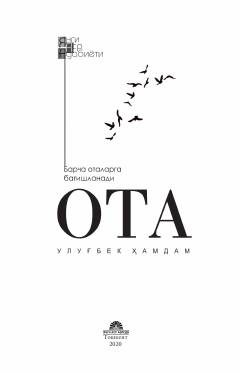

OOtalik ҳissi, бурчи ва инсон тақдири ҳақидаги таъсирли ўзбек романи.
Ushbu roman Ikkinchi jahon urushi davridan tortib to bugungi kungacha bo'lgan davrni qamrab olib, inson qismati, ota-farzand munosabatlari va hayotiy sinovlarni mahorat bilan ochib beradi. Asarda yigirmadan ortiq rang-barang xarakterdagi insonlarning taqdiri va murakkab ruhiy olami tasvirlangan. Muallif hayotning quvonchli va tashvishli lahzalari orqali ota degan ulug' zotning mas'uliyati va o'rnini ko'rsatib beradi.